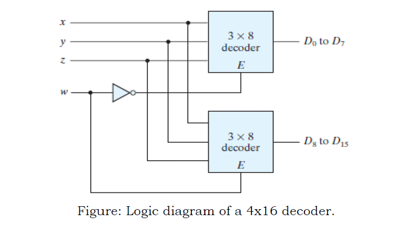
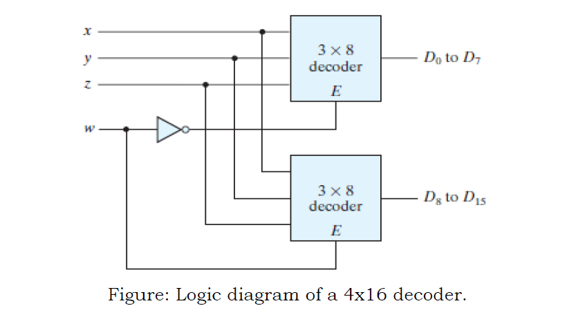

Aim
Detection of the Stuck-at-0 faults (SA0) on the 4x16 decoder constructed with two 3x8 decoders as shown in the image.


Detection of the Stuck-at-0 faults (SA0) on the 4x16 decoder constructed with two 3x8 decoders as shown in the image.
